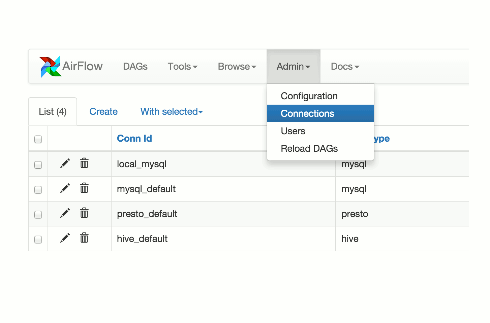

Airflow’s Documentation¶
Airflow is a platform to programmaticaly author, schedule and monitor data pipelines.
Use Airflow to author workflows as directed acyclic graphs (DAGs) of tasks. The Airflow scheduler executes your tasks on an array of workers while following the specified dependencies. Rich command lines utilities makes performing complex surgeries on DAGs a snap. The rich user interface makes it easy to visualize pipelines running in production, monitor progress and troubleshoot issues when needed.

Principles¶
- Dynamic: Airflow pipelines are configuration as code (Python), allowing for dynamic pipeline generation. This allows for writting code that instantiate pipelines dynamically.
- Extensible: Easily define your own operators, executors and extend the library so that it fits the level of abstraction that suits your environment.
- Elegant: Airflow pipelines are lean and explicit. Parameterizing your scripts is built in the core of Airflow using powerful Jinja templating engine.
- Scalable: Airflow has a modular architecture and uses a message queue to talk to orchestrate an arbitrary number of workers. Airflow is ready to scale to infinity.